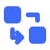
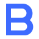

Blueroll
Estrutura que se abre. Caminhos que se revelam. A identidade final do Blueroll, com os conceitos originais preservados abaixo.
Final
Níveis abertos. Grade de 64, traços de 6, raio externo de 8 e interno de 4. O núcleo em #6e9bff revela o próximo nível. Lettering original em contornos preenchidos.
Fundo escuro

Favicon redesenhado na grade de 16: traços de 2 px, vão mínimo de 1 px entre níveis e núcleo de 2 × 2. A versão monocromática herda a cor do contexto quando o SVG é usado inline.
Histórico · 4 conceitos originais
Níveis abertos
Fundo escuro
Fundo claro
Fronteiras aninhadas revelam um núcleo, com uma abertura que convida a entrar no próximo nível.
Salto a salto
Fundo escuro

Fundo claro
Duas caixas e um percurso ortogonal representam a leitura do fluxo, um salto de cada vez.
B modular
Fundo escuro

Fundo claro
Um B geométrico reúne duas caixas vazadas em uma única estrutura de limites bem definidos.
Planta em expansão
Fundo escuro
Fundo claro
Uma borda enrolada se abre em planta, traduzindo o plano que se revela antes da execução.